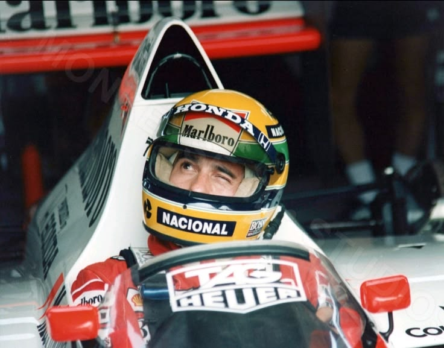
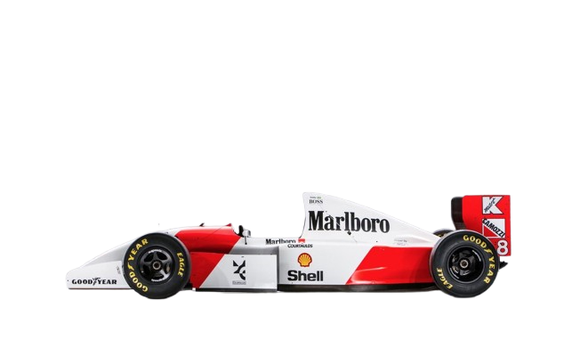
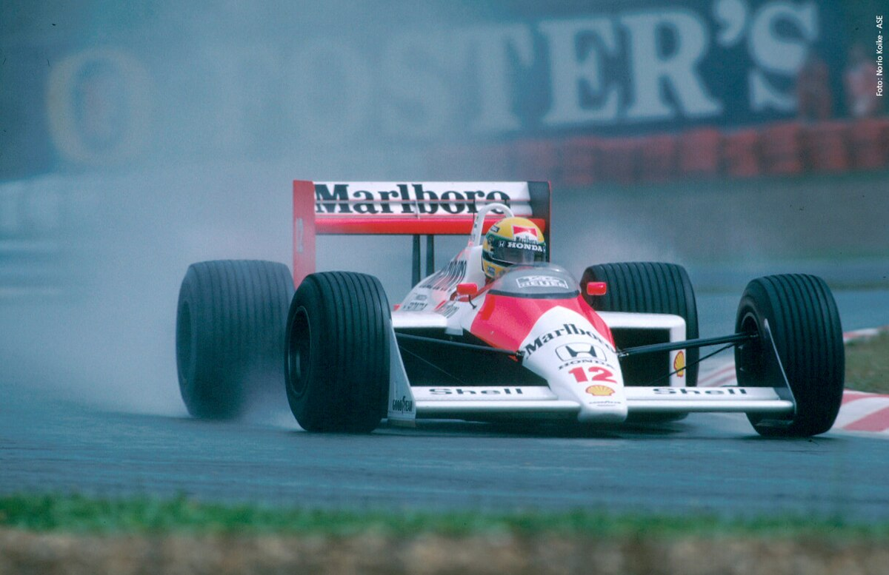
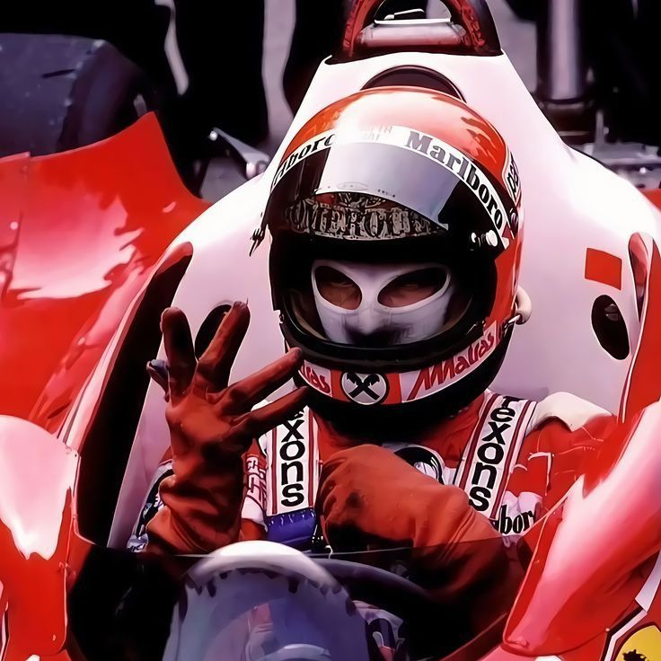
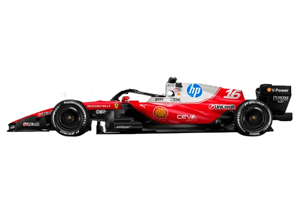
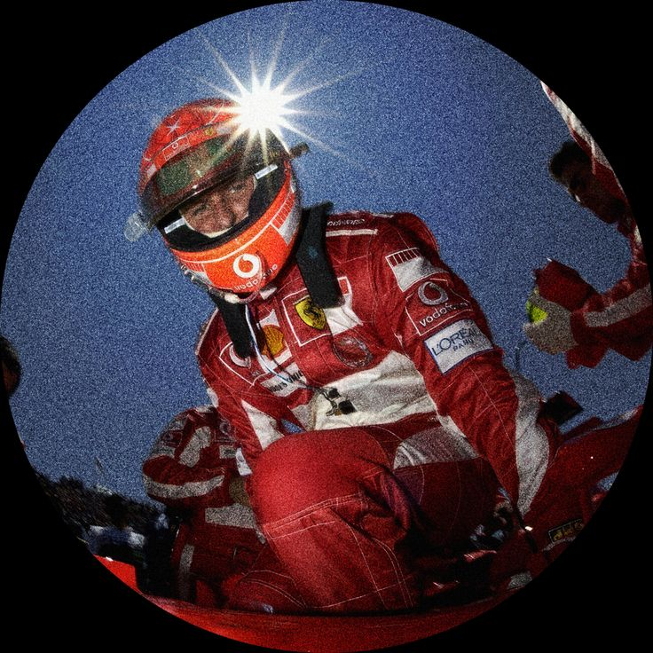
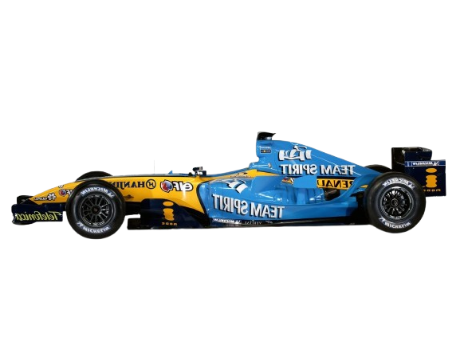
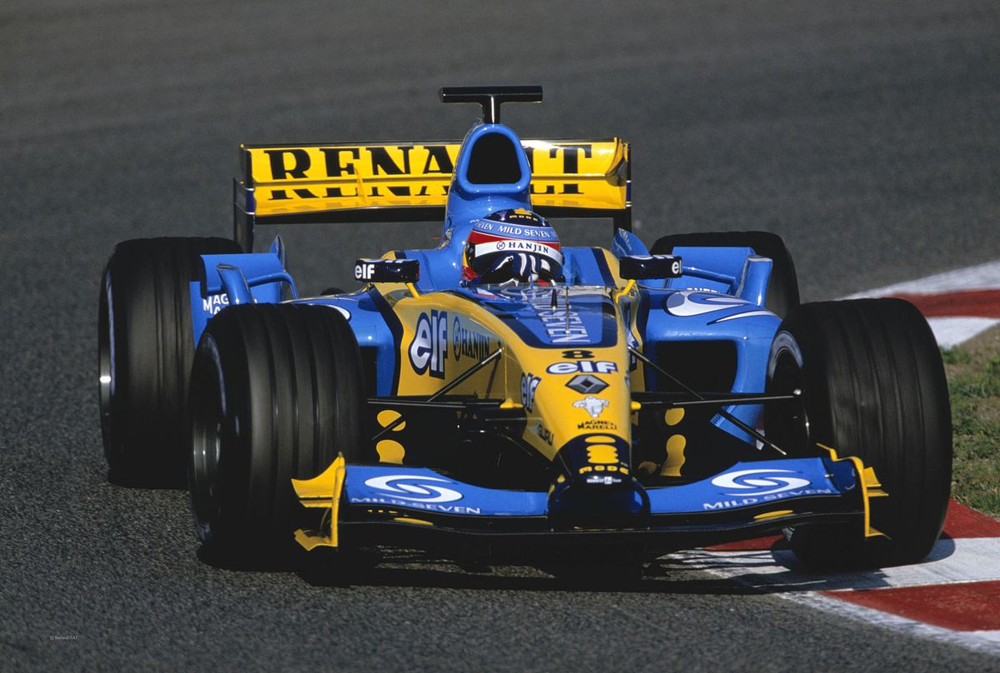
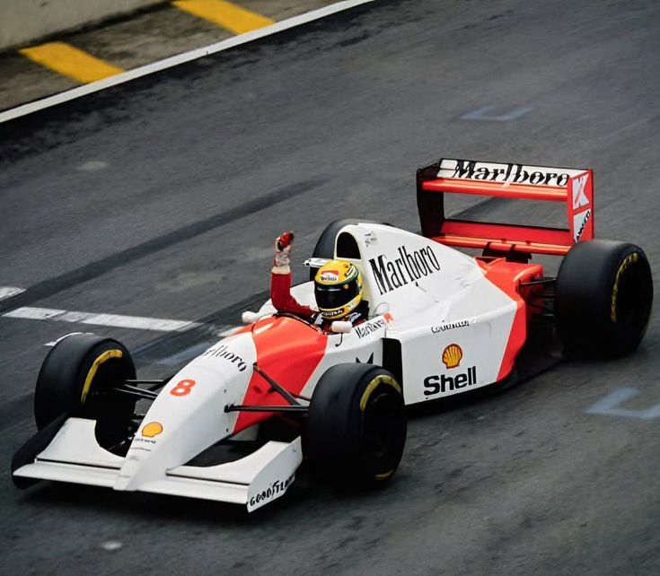
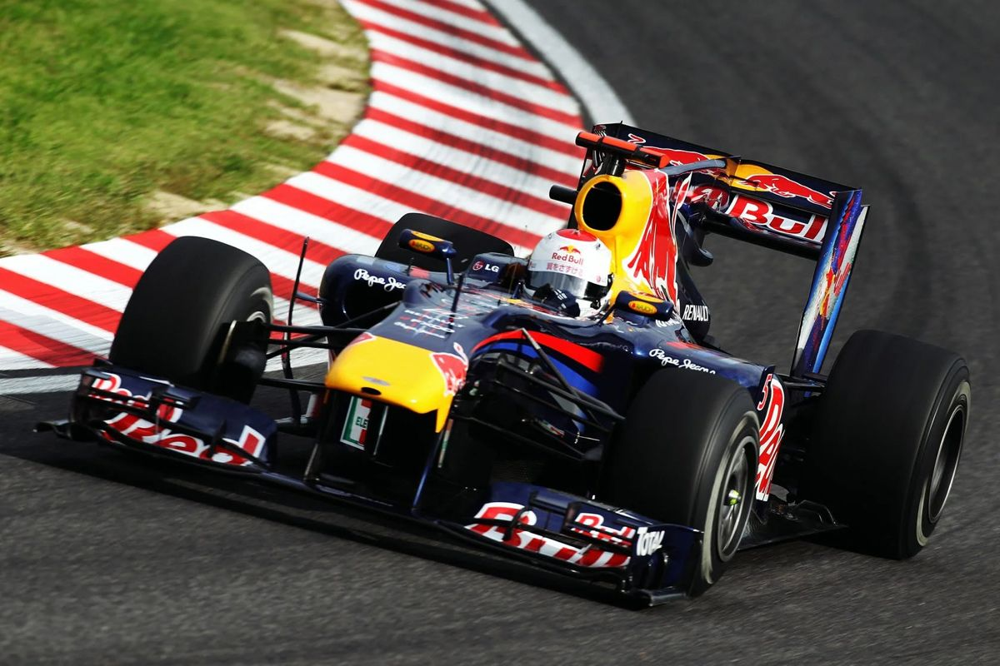

1960 — 1994
AYRTON SENNA
Compitió en Fórmula 1 para los equipos Toleman, Lotus, McLaren y Williams entre 1984 y 1994, resultó tres veces ganador del Campeonato

LEYENDAS DE LA F1
Nombres que convirtieron cada tramo en un espectáculo y cada segundo en una batalla.


1960 — 1994
Compitió en Fórmula 1 para los equipos Toleman, Lotus, McLaren y Williams entre 1984 y 1994, resultó tres veces ganador del Campeonato


1949 — 2019
Fue campeón del Campeonato Mundial de Fórmula 1 en 1975 y 1977 con Ferrari, y en 1984 con McLaren, subcampeón en 1976, y cuarto en 1974 y 1978.


1969 — 2026
Fue siete veces campeón del Campeonato Mundial de Fórmula 1: dos con el equipo Benetton en 1994 y 1995, y cinco con la escudería Ferrari entre 2000 y 2004
Máquinas inolvidables
Tres máquinas construidas para vencer. Tres maneras distintas de escribir la historia sobre cualquier superficie.

2006
Renault y Fernando Alonso habían ganado el título de campeones del mundo de F1 con un monoplaza equipado con un motor V10.

1988
Fue conducido por Ayrton Senna y Alain Prost, Es estadísticamente uno de los mejores monoplazas de la historia

2011
Este modelo fue apodado "Kinky Kylie" (Pervertida Kylie) por Sebastian Vettel, manteniendo la costumbre adoptada por años anteriores.